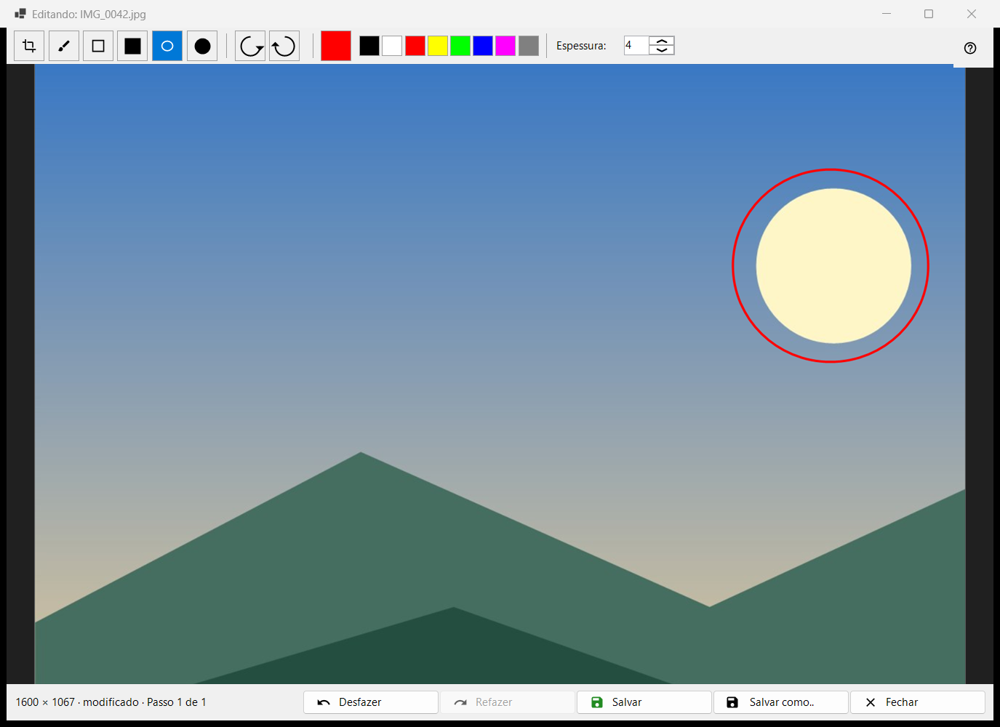
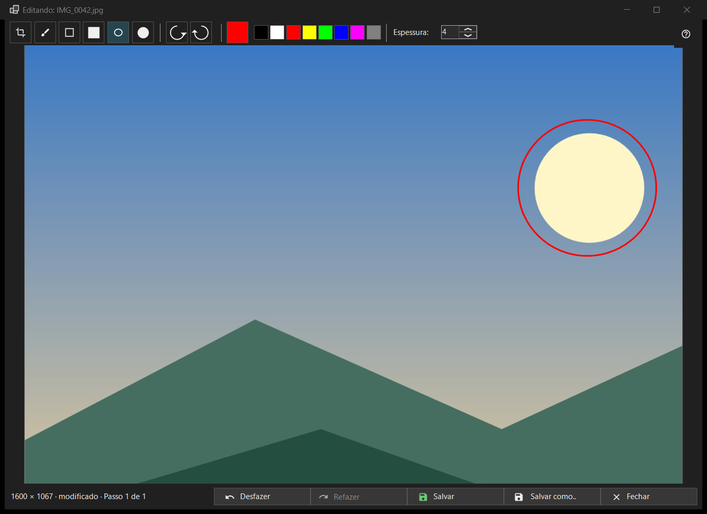

Editar imagem
Finalidade
Um pequeno editor para uma única imagem estática: desenhar formas, recortar, girar e espelhar, depois salvar sobre o original ou como um novo arquivo. Ele se abre, com o nome de arquivo da imagem no título, pelo botão Editar da barra de ferramentas ou pelo primeiro item do menu da imagem, e apenas para uma imagem estática (não para uma animação). O editor lê o arquivo de novo e trabalha em uma cópia própria.


Nesta ordem
- Pressione Editar no visualizador.
- Escolha uma ferramenta, uma cor e uma espessura.
- Desenhe na imagem, ou recorte, gire ou espelhe; Desfazer volta um passo.
- Pressione Salvar para gravar sobre o original, ou Salvar como.. para um novo arquivo.
- Feche a janela; se houver alterações não salvas, responda à pergunta.
Os elementos
Ferramentas
Na faixa: Recortar, Pincel, Retângulo, Retângulo preenchido, Oval e Oval preenchido. As teclas são C, B, R e O (as preenchidas não têm). Mantenha Shift pressionada ao desenhar um retângulo ou uma oval para obter um quadrado ou um círculo. Passar o mouse sobre uma ferramenta mostra o nome e a tecla dela.
Cor e espessura
O botão de cor abre a caixa de cores, e ao lado ficam oito amostras rápidas (preto, branco, vermelho, amarelo, verde-limão, azul, magenta, cinza). A espessura vai de 1 a 64 pixels da imagem (padrão 4); as teclas [ e ] a alteram de um em um. Cor e espessura são compartilhadas por todas as ferramentas.
Recortar
Com a ferramenta Recortar, arraste uma moldura sobre a imagem. O botão Aplicar recorte aparece apenas enquanto existe uma moldura. Enter faz o mesmo; Esc remove a moldura sem recortar. A imagem só é cortada quando você aplica o recorte.
Girar e espelhar
Girar à esquerda (Ctrl+[) e Girar à direita (Ctrl+]) giram os pixels. As teclas H e V espelham a imagem na horizontal e na vertical. Isso altera a própria imagem, ao contrário de R no visualizador, que gira apenas a exibição.
Desfazer e Refazer
Desfazer (Ctrl+Z) e Refazer (Ctrl+Y ou Ctrl+Shift+Z) percorrem um histórico de até 20 passos dentro de um limite de memória. A linha de status mostra o tamanho e, depois de uma alteração, modificado com Passo N de M; quando o limite descarta os passos mais antigos, ela diz Passos antigos foram descartados: limite de memória.
Salvar
Salvar (Ctrl+S) grava sobre o original e só fica ativo depois de uma alteração; antes disso, a dica dele diz Nada para salvar: a imagem não foi alterada. Para um JPEG, a pergunta é feita uma vez por sessão: O JPEG será recomprimido - isso é irreversível. A data da foto e os demais dados EXIF são mantidos. O arquivo é gravado com um nome temporário e trocado; se o salvamento falhar, a janela continua aberta com o motivo.
Salvar como..
Abre uma caixa de arquivo com o nome acrescido de (editada). Os formatos são PNG, JPEG, BMP, TIFF e WebP; uma imagem em qualquer outro formato é oferecida como PNG. A pasta temporária de um arquivo compactado é recusada. Depois de salvar sobre o original, o visualizador o recarrega; um novo arquivo na mesma pasta é aberto; um em outro lugar é citado na linha de status.
Quando Salvar está desativado
A linha de status diz Não é possível sobrescrever o original, com o motivo: este formato não é gravado, o arquivo é somente leitura, não há permissão de gravação, outro programa está usando o arquivo, o arquivo tem várias páginas ou quadros (só o primeiro é editado), está dentro de um arquivo compactado ou não existe. Salvar como.. continua disponível.
Fechamento
Fechar ou Esc fecha a janela; Esc primeiro cancela um traço em andamento e depois remove a moldura de recorte. Com alterações não salvas, a pergunta diz: As alterações não foram salvas - Fechar o editor e perder as alterações não salvas? Salvar salva primeiro, Não salvar descarta, Cancelar (a resposta padrão, também Esc) permanece no editor. Essa pergunta é feita mesmo quando as confirmações estão desativadas.